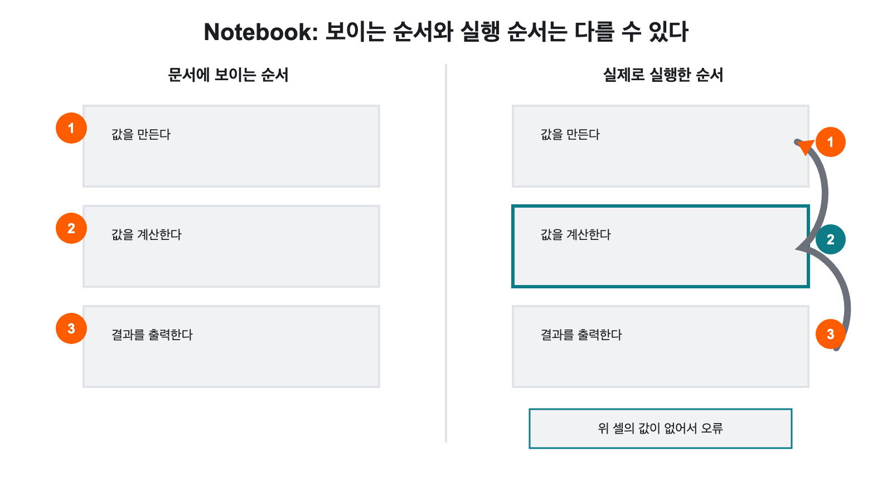

프로그래밍 언어와
Python编程语言与
Python
그리고 코드를 담는 두 가지 파일 형식이 어떻게 다른지 살펴봅니다.看看为什么语言这么多、这门课为什么选了 Python，
以及装代码的两种文件格式有什么不同。
“어떤 언어부터 배워야 해요?”“该从哪门语言学起？”
코딩을 시작하려고 검색창에 “프로그래밍 언어 추천”을 칩니다. 결과가 쏟아집니다. Python, JavaScript, Java, C, C++, C#, Go, Rust, Swift, Kotlin… 이름만 스무 개가 넘습니다.想开始学编程，在搜索框里打“编程语言推荐”。结果哗哗地出来：Python、JavaScript、Java、C、C++、C#、Go、Rust、Swift、Kotlin……光名字就二十多个。
글마다 말이 다릅니다. 어떤 글은 “무조건 Python”이라 하고, 다른 글은 “취업하려면 Java”라고 하고, 또 다른 글은 “C부터 해야 기초가 잡힌다”라고 합니다. 모두 나름의 근거를 댑니다.每篇文章说法都不一样。有的说“无脑选 Python”，有的说“想就业就学 Java”，还有的说“得从 C 开始才打得牢基础”。每一种都讲得头头是道。
혼란스러운 이유는 질문이 잘못되었기 때문입니다. “가장 좋은 언어는?”이라는 질문에는 답이 없습니다. “무엇을 만들려고 하는가?”를 먼저 물어야 답이 정해집니다.之所以混乱，是因为问题本身问错了。“最好的语言是哪个？”这个问题没有答案。要先问“你想做什么？”，答案才定得下来。
프로그래밍 언어는 왜 여러 종류이며, 이 수업에서는 왜 Python을 사용할까?为什么编程语言有那么多种，而这门课为什么用 Python？
- CPU는 기계어만 실행할 수 있고, 사람은 문제에 가까운 고급 프로그래밍 언어를 쓴다.CPU 只能执行机器语言，而人使用贴近问题的高级编程语言。
- 사람이 쓴 코드는 컴파일러나 인터프리터를 거쳐 운영체제가 마련한 환경에서 실행된다.人写的代码要经过编译器或解释器，在操作系统备好的环境中运行。
- ‘고급’은 어렵다는 뜻이 아니라 하드웨어에서 멀고 사람에게 가깝다는 뜻이다.“高级”不是难的意思，而是离硬件远、离人近的意思。
고급 언어가 하나뿐이라면 고민할 일이 없었을 것입니다. 그런데 실제로는 수십 가지가 함께 쓰입니다. 이번 차시는 그 이유에서 출발합니다.要是高级语言只有一种，就不用纠结了。可实际上有几十种在同时使用。这一课时就从这个原因说起。
프로그래밍 언어가 여러 개인 이유为什么编程语言有很多种 핵심核心
- 현상现象
- 사람끼리도 상황에 따라 다른 말을 씁니다. 요리법은 순서대로 적고, 수학 문제는 기호로 적고, 노래 가사는 또 다르게 적습니다. 담는 내용에 따라 알맞은 형식이 다릅니다.人与人之间也会因场合而换说法。菜谱按步骤写，数学题用符号写，歌词又是另一种写法。装的内容不同，合适的形式也不同。
- 쉬운 설명通俗说法
- 컴퓨터가 할 일과 규칙을 사람이 적어 두기 위해 만든 약속된 표기 방식입니다.它是为了让人写下计算机要做的事和规则，而制定的约定好的记法。
- 정확한 정의准确定义
- 컴퓨터가 수행할 연산과 제어 흐름을 사람이 기술할 수 있도록 문법과 의미 규칙을 정해 둔 형식 언어.为使人能够描述计算机要执行的运算与控制流程，而规定了语法和语义规则的形式语言。
- 경계边界
- 일상에서 ‘코딩 언어’라고도 하지만, 교과서와 기술 문서에서는 보통 프로그래밍 언어라고 씁니다. HTML은 화면의 구조를 적는 마크업 언어여서 엄밀히는 프로그래밍 언어로 분류하지 않습니다.日常里也说“编码语言”，但教科书和技术文档通常写作编程语言。HTML 是描述页面结构的标记语言，严格说不归类为编程语言。
- 문장 속 사용例句
- “이 프로젝트는 서버는 Python으로, 화면은 JavaScript로 만들었다.”“这个项目服务器用 Python 写，界面用 JavaScript 写。”
모든 작업에 가장 좋은 언어 하나가 정해져 있지는 않습니다. 언어마다 만들어진 목적과 잘하는 일이 다르기 때문입니다.并不存在一种对所有工作都最好的语言。因为每种语言被造出来的目的和擅长的事都不同。
프로그래밍 언어가 여러 개인 이유为什么编程语言有很多种 핵심核心(이어서)（续）
| 언어语言 | 자주 쓰이는 곳常用于 | 특징特点 |
|---|---|---|
| Python | 데이터 분석, AI, 자동화, 교육, 서버数据分析、AI、自动化、教育、服务器 | 문법이 비교적 읽기 쉽고 쓸 수 있는 라이브러리가 많다.语法相对易读，可用的库很多。 |
| JavaScript | 웹페이지의 동작, 웹 서버网页的交互行为、Web 服务器 | 브라우저에서 직접 실행되는 대표적인 언어다.在浏览器中直接运行的代表性语言。 |
| C · C++ | 운영체제, 게임 엔진, 장치 제어, 고성능 프로그램操作系统、游戏引擎、设备控制、高性能程序 | 하드웨어와 가까운 수준까지 다룰 수 있고 성능을 세밀하게 조정할 수 있다.能处理到接近硬件的层面，可以精细调优性能。 |
| Java · Kotlin | 기업용 서버, Android 앱企业级服务器、Android 应用 | 큰 프로그램을 구조적으로 관리하는 데 널리 쓰인다.广泛用于结构化地管理大型程序。 |
| Swift | Apple 기기의 앱Apple 设备的应用 | iPhone, iPad와 Mac용 앱 개발에 주로 쓰인다.主要用于开发 iPhone、iPad 和 Mac 上的应用。 |
표를 보고 “Python은 웹을 못 만든다”라고 읽으면 안 됩니다. Python으로 웹서비스를 만들 수도 있고 JavaScript로 서버를 만들 수도 있습니다. 실제 개발에서는 만들려는 것, 실행할 장소, 필요한 속도, 이미 쓰고 있는 기술, 함께 일하는 사람을 모두 보고 언어를 고릅니다.看了表不能读成“Python 做不了网站”。Python 可以做网络服务，JavaScript 也可以做服务器。真实开发中会综合考虑要做什么、在哪里运行、需要多快、已经在用什么技术、和谁一起工作再选语言。
정리하면 이렇습니다. 언어가 여러 개인 이유는 누가 더 뛰어나서가 아니라, 서로 다른 문제를 풀려고 서로 다른 시기에 만들어졌기 때문입니다.归纳起来是这样：语言之所以有很多种，不是因为谁更强，而是因为它们为解决不同的问题、在不同的时期被造出来。
왜 이 수업은 Python을 고르는가这门课为什么选 Python 핵심核心
Python이 모든 상황에서 가장 뛰어난 언어이기 때문은 아닙니다. 그러나 처음 프로그래밍을 배우는 학생이 한 가지 언어로 여러 분야를 경험하기에는 매우 좋은 선택입니다. 이유를 하나씩 보겠습니다.并不是因为 Python 在所有场合都最强。但对于第一次学编程、想用一门语言体验多个领域的学生来说，它是非常好的选择。我们逐条来看。
이유 1 — 한 언어로 여러 분야를 갈 수 있다理由 1 — 一门语言可以通向多个领域
Python은 간단한 계산과 파일 정리부터 데이터 분석, 그래프, 웹 서버, 업무 자동화, 과학 계산과 AI 개발까지 폭넓게 쓰입니다. 한 분야에만 쓰는 전용 언어가 아니어서, 기초를 배운 뒤 자기 관심 분야로 이어 가기 좋습니다.Python 从简单计算和文件整理，到数据分析、图表、Web 服务器、办公自动化、科学计算和 AI 开发，用途都很广。它不是只用于某一个领域的专用语言，所以打好基础后，很容易接着走向自己感兴趣的方向。
이 점은 여러분에게 실질적인 이득입니다. 지금은 무엇에 관심이 생길지 모릅니다. 나중에 데이터 쪽으로 가든, 웹 쪽으로 가든, AI 쪽으로 가든 지금 배운 것을 버리지 않고 이어 쓸 수 있습니다.这一点对你们有实实在在的好处。现在还不知道以后会对什么产生兴趣。将来无论走数据、走 Web 还是走 AI，现在学的东西都不用丢，可以接着用。
이유 2 — 코드가 짧고 읽기 쉽다理由 2 — 代码短，读起来容易
Python 코드는 비교적 짧고, 문장이 하는 일이 겉으로 잘 드러납니다. 처음 코드를 보는 학생도 값이 어디에 저장되고 어떤 계산이 일어나는지 따라가기 좋습니다.Python 代码比较短，句子在做什么也比较显眼。第一次看代码的学生也容易跟上值存到了哪里、发生了什么计算。
이 수업의 목표가 ‘코드를 읽는 힘’이라는 점을 떠올리면, 읽기 쉬운 언어를 고르는 것은 자연스러운 선택입니다. 같은 일을 하는 코드라도 언어에 따라 읽는 부담이 크게 다릅니다.想到这门课的目标是“读代码的能力”，选一门易读的语言就是很自然的事。做同一件事的代码，因语言不同，阅读负担会差很多。
이유 3 — 학교를 떠난 뒤에도 이어진다理由 3 — 离开学校之后还接得上
이런 이유로 Python은 중·고등학교 정보 수업과 대학의 프로그래밍 입문 수업에서 널리 쓰입니다. 여기서 배운 변수, 조건, 반복과 함수는 대학의 데이터 분석 수업이나 웹 개발 수업에서 그대로 다시 등장합니다. 이번 학기가 마지막이 아니라 첫 칸이라는 뜻입니다.正因如此，Python 在中学信息课和大学的编程入门课上被广泛使用。这里学到的变量、条件、循环和函数，在大学的数据分析课或 Web 开发课上会原样再次出现。也就是说，这个学期不是终点，而是第一格。
이유 4 — AI를 다루는 사람들이 쓰는 언어다理由 4 — 这是做 AI 的人在用的语言
오늘날 AI와 기계학습 분야의 대표적인 도구 상당수가 Python을 중심으로 제공됩니다. AI 개발자는 Python으로 데이터를 정리하고, 학습 코드를 작성하고, 만들어진 모델을 시험하거나 서비스와 연결합니다.今天 AI 与机器学习领域相当多的代表性工具，都以 Python 为中心提供。AI 开发者用 Python 整理数据、编写训练代码、测试做好的模型或把它接入服务。
여기에 더해 실용적인 이유가 하나 더 있습니다. 생성형 AI는 Python 예시를 특히 풍부하게 만들어 냅니다. 인터넷에 Python 코드와 설명이 워낙 많이 쌓여 있기 때문입니다. 따라서 Python은 AI가 만든 코드를 읽고 실행하며 검증하는 연습에도 적합합니다.此外还有一个很实际的理由：生成式 AI 产出的 Python 示例格外丰富，因为互联网上积累的 Python 代码和讲解实在太多。因此 Python 也很适合用来练习读懂、运行并验证 AI 写的代码。
이유 5 — 라이브러리라는 큰 자산理由 5 — 库这项大资产 핵심核心
- 현상现象
- 그래프를 하나 그리려고 선을 긋고, 눈금을 매기고, 글씨를 배치하는 코드를 처음부터 다 짜야 한다면 며칠이 걸릴 것입니다. 그런데 실제로는 몇 줄이면 그래프가 나옵니다.要画一张图表，如果连画线、标刻度、摆文字的代码都得从头写，大概得花上好几天。可实际上几行就出来了。
- 쉬운 설명通俗说法
- 다른 사람이 이미 만들어 공개해 둔 기능 묶음입니다. 가져다 쓰면 그 부분을 직접 만들지 않아도 됩니다.它是别人已经做好并公开的功能包。拿来用，那部分就不用自己造了。
- 정확한 정의准确定义
- 특정 기능을 수행하는 코드를 재사용할 수 있도록 묶어 배포한 소프트웨어 꾸러미.把实现特定功能的代码打包发布、以便重复使用的软件包。
- 경계边界
- 라이브러리는 내 프로그램이 불러다 쓰는 부품입니다. 반대로 전체 구조를 미리 정해 두고 그 틀 안에 내 코드를 끼워 넣게 하는 것은 프레임워크라고 구분해 부릅니다.库是我的程序去调用的零件。反过来，先把整体结构定好、让我的代码嵌进那个框子里的，则另外称作框架。
- 문장 속 사용例句
- “그래프는 Matplotlib 라이브러리를 불러와서 그렸다.”“图表是引入 Matplotlib 库画出来的。”
Python은 오랫동안 여러 나라와 분야에서 쓰여 온 언어입니다. 사용자와 개발자가 많으므로 학습 자료, 질문과 답변, 예제와 문제 해결 기록을 찾기 쉽습니다. 그리고 널리 쓰이는 라이브러리는 많은 사람이 실제 작업에서 쓰면서 오류를 찾고 기능을 개선해 왔습니다.Python 是一门在许多国家和领域使用了很久的语言。用户和开发者多，所以学习资料、问答、示例和问题排查记录都好找。而且被广泛使用的库，经过许多人在实际工作中使用，不断发现错误、改进功能。
이유 5 — 라이브러리라는 큰 자산理由 5 — 库这项大资产 핵심核心(이어서)（续）
| 분야领域 | 대표적인 Python 도구代表性的 Python 工具 | 할 수 있는 일能做什么 |
|---|---|---|
| 수치 계산数值计算 | NumPy, SciPy | 많은 수를 빠르게 계산하고 과학·공학 문제를 다룬다.快速计算大量数值，处理科学与工程问题。 |
| 데이터 분석数据分析 | pandas, Jupyter | 데이터를 정리하고 계산 과정과 결과를 기록한다.整理数据，记录计算过程与结果。 |
| 그래프图表 | Matplotlib | 데이터를 막대·선·점 등의 그래프로 나타낸다.把数据画成柱状图、折线图、散点图等。 |
| AI·기계학습AI · 机器学习 | PyTorch, TensorFlow, scikit-learn | 데이터로 모델을 만들고 학습·평가한다.用数据建立模型并进行训练与评估。 |
| 웹 서버Web 服务器 | Django, Flask | 브라우저의 요청을 처리하는 서버를 만든다.构建处理浏览器请求的服务器。 |
| 자동화自动化 | Python 기본 기능과 여러 라이브러리Python 基本功能与各种库 | 파일 정리와 반복 작업을 코드로 처리한다.用代码处理文件整理与重复作业。 |
이 표에서 pandas와 Matplotlib은 4회에 실제로 쓰게 됩니다. 나머지는 지금 이름만 눈에 익혀 두면 됩니다.表中的 pandas 和 Matplotlib 会在第 4 次课实际用到。其余的现在把名字混个眼熟就够了。
라이브러리가 유명하다는 이유만으로 모든 코드가 자동으로 안전하거나 정확해지지는 않습니다. 출처, 사용 목적, 최근 업데이트 상태, 실제 결과는 여전히 확인해야 합니다.不能因为一个库有名，就认为所有代码自动变得安全或准确。来源、使用目的、最近的更新状况、实际结果仍然需要确认。
특히 AI가 “이 라이브러리를 설치하세요”라고 제안할 때 그대로 따르지 않습니다. 라이브러리를 하나 추가하면 프로그램의 실행 환경과 점검해야 할 범위도 함께 늘어납니다. 이 원칙은 2-2에서 다시 만납니다.尤其当 AI 建议“请安装这个库”时，不要照单全收。每加一个库，程序的运行环境和需要检查的范围也会跟着变大。这条原则在 2-2 会再次遇到。
Python은 입문용 언어에 머물지 않는다Python 不止是入门语言 확장拓展
“학교에서 배우기 좋은 언어”라는 말에는 “실제로는 별로 안 쓰인다”는 뉘앙스가 섞이기 쉽습니다. Python은 그렇지 않습니다. 두 가지 사례를 보겠습니다.“适合在学校学的语言”这种说法，容易夹带“实际上不太用”的意味。Python 不是这样。我们看两个例子。
사례 1 — 대학과 연구에서 MATLAB을 대신하고 있다例 1 — 在大学和科研中正在取代 MATLAB
수학·과학·공학 분야에서는 오랫동안 MATLAB 같은 전용 프로그램을 많이 썼습니다. 지금은 대학생과 연구자들이 MATLAB으로 하던 수치 계산, 데이터 분석과 그래프 작업의 상당 부분을 Python으로 하기도 합니다.数学、科学与工程领域长期大量使用 MATLAB 这类专用软件。如今大学生和研究者会用 Python 来做原本用 MATLAB 做的相当一部分数值计算、数据分析和绘图工作。
NumPy·SciPy·Matplotlib과 Jupyter를 함께 쓰면 계산 과정, 코드, 설명과 그래프를 한곳에 기록할 수 있습니다. 게다가 Python은 무료로 쓸 수 있고 다른 분야의 코드와 연결하기도 쉽습니다. 그래서 대학 수업과 연구에서 MATLAB을 대신하거나 함께 쓰는 경우가 많아졌습니다.把 NumPy、SciPy、Matplotlib 和 Jupyter 一起用，就能把计算过程、代码、说明和图表记录在同一个地方。而且 Python 免费，也容易和其他领域的代码衔接。所以在大学课程和科研中，用它取代 MATLAB 或与之并用的情况多了起来。
다만 모든 MATLAB 기능이 Python으로 완전히 옮겨진 것은 아닙니다. 특정 전공의 전용 도구나 Simulink처럼 MATLAB 환경이 필요한 작업도 있습니다. 중요한 점은 Python이 단순한 입문 언어를 넘어 실제 학습과 연구에서 쓰이는 언어라는 것입니다.不过并非所有 MATLAB 功能都完全搬到了 Python。某些专业的专用工具，或像 Simulink 这样必须在 MATLAB 环境里做的工作依然存在。要点在于：Python 已经越过单纯的入门语言，成为实际用于学习与研究的语言。
사례 2 — AI에서 웹까지 이어진다例 2 — 从 AI 一路连到 Web
Python은 AI 모델을 개발하는 데 그치지 않고 Django·Flask 같은 도구로 웹 서버를 만들 때도 씁니다. 앞에서 본 Instagram이 그 예입니다.Python 不只用于开发 AI 模型，用 Django、Flask 之类的工具做 Web 服务器时也在用。前面提到的 Instagram 就是例子。
다만 이 수업의 웹서비스는 Python으로 만들지 않습니다. 10회 이후에는 화면과 서버 기능을 한 프로젝트 안에서 함께 다루는 JavaScript 계열 도구를 씁니다. 우리 수업에는 화면과 서버를 따로 두고 연결할 시간이 없기 때문입니다.不过本课的网络服务不用 Python 来做。第 10 次课以后使用的是能把画面与服务器功能放在同一个项目里一起处理的 JavaScript 系工具。因为我们的课时不够把画面和服务器分开再对接。
언어가 바뀌어도 걱정할 것은 없습니다. 지금 Python으로 익히는 값·조건·반복·함수는 그 언어에도 그대로 나타납니다.语言换了也不用担心。现在用 Python 掌握的值、条件、循环、函数，在那门语言里同样会出现。
Python은 입문용 언어에 머물지 않는다Python 不止是入门语言 확장拓展(이어서)（续）
일반적인 웹브라우저는 JavaScript를 직접 실행합니다. 그런데 PyScript 같은 도구를 쓰면 웹페이지 안에서 Python 코드를 실행하는 구성도 만들 수 있습니다.一般的网页浏览器直接执行 JavaScript。不过用 PyScript 这类工具，也能构造出在网页中运行 Python 代码的形态。
이것이 “웹에서 JavaScript가 필요 없다”는 뜻은 아닙니다. PyScript는 Python의 활용 범위가 브라우저까지 이어질 수 있음을 보여 주는 확장 사례로 이해하면 됩니다.这并不是说“网页不需要 JavaScript”。把 PyScript 理解为一个扩展案例就好：它表明 Python 的适用范围可以一直延伸到浏览器。
겁먹을 필요는 없습니다. Python으로 값, 조건, 반복과 함수 같은 공통 원리를 먼저 익히면, 문법이 다른 JavaScript 코드에서도 같은 구조를 알아볼 수 있습니다. 언어를 하나 더 배우는 것이 아니라 같은 구조를 다른 표기로 다시 보는 것에 가깝습니다.不必害怕。先用 Python 掌握值、条件、循环和函数这些共通原理，在语法不同的 JavaScript 代码里也能认出同样的结构。与其说是多学一门语言，不如说是用另一种写法再看一遍同样的结构。
언어만 있어서는 코드가 실행되지 않는다光有语言，代码是跑不起来的 핵심核心
Python 코드를 문서에 적어 놓는 것만으로는 아무 일도 일어나지 않습니다. 코드를 작성하고, 실행하고, 결과를 확인할 환경이 있어야 합니다.把 Python 代码写在文档里，什么也不会发生。必须有能编写、运行并查看结果的环境。
다음 차시(2-2)에서 실제로 설치하게 될 도구들이 각각 이 흐름의 어느 자리를 맡는지 미리 정리해 두겠습니다. 이름이 낯설어도 지금은 역할이 서로 다르다는 점만 잡으면 됩니다.下一课时（2-2）要实际安装的工具，各自在这条流程里占哪个位置，我们先理一遍。名字陌生没关系，现在只要抓住各自职责不同这一点就行。
언어만 있어서는 코드가 실행되지 않는다光有语言，代码是跑不起来的 핵심核心(이어서)（续）
| 도구工具 | 역할职责 |
|---|---|
| VS Code | 코드와 파일을 작성하고 관리하는 편집기编写和管理代码与文件的编辑器 |
| Python | Python 코드를 실제로 읽고 실행하는 언어와 인터프리터真正读取并执行 Python 代码的语言与解释器 |
| Jupyter Notebook | 설명, 코드와 실행 결과를 셀 단위로 함께 기록하는 문서把说明、代码与运行结果按单元格一起记录下来的文档 |
| VS Code Python 확장VS Code Python 扩展 | VS Code가 Python 실행 환경을 찾고 쓸 수 있게 돕는 기능帮助 VS Code 找到并使用 Python 运行环境的功能 |
| VS Code Jupyter 확장VS Code Jupyter 扩展 | VS Code에서 Notebook을 열고 셀을 실행하게 하는 기능让 VS Code 能打开 Notebook 并运行单元格的功能 |
| uv | Python 버전, 가상환경과 라이브러리를 준비하고 관리하는 도구准备和管理 Python 版本、虚拟环境与库的工具 |
VS Code에 Python 확장을 설치했다고 해서 Python 자체가 생기는 것이 아닙니다. 확장은 VS Code와 Python을 연결할 뿐이고, 실제 코드는 선택한 Python 인터프리터가 실행합니다.在 VS Code 里装了 Python 扩展，并不等于就有了 Python 本身。扩展只是把 VS Code 和 Python 连接起来，真正执行代码的是你选定的 Python 解释器。
다음 차시에서 “확장은 깔았는데 왜 안 되지?”라는 상황을 만나면 이 문단을 떠올리세요.下一课时若遇到“扩展明明装了，怎么还是不行？”的情况，请想起这一段。
Python 파일 .pyPython 文件 .py 핵심核心
Python 코드를 담는 대표적인 형식은 두 가지입니다. .py 파일과 .ipynb Notebook입니다. 두 형식 모두 같은 Python 인터프리터와 같은 라이브러리를 씁니다. 그러니 계산 능력이 다른 것이 아닙니다. 다른 것은 코드를 구성하는 방법, 결과를 기록하는 방법, 그리고 주된 용도입니다.装 Python 代码的代表性格式有两种：.py 文件和 .ipynb Notebook。两种格式用的是同一个 Python 解释器和同样的库，所以计算能力并无差别。不同的是组织代码的方式、记录结果的方式，以及主要用途。
.py 파일은 Python 소스 코드를 저장하는 일반적인 텍스트 파일입니다. 특별한 형식이 아니라 그냥 글자입니다. 실행하면 보통 파일의 코드를 위에서 아래로 차례대로 처리합니다..py 文件是保存 Python 源代码的普通文本文件。没有什么特别格式，就是文字。运行时通常把文件里的代码从上到下依次处理。
name = "다현"
print(name + "님, 반갑습니다.")코드 안에 이름을 직접 적어 두었다.名字直接写在代码里。
+로 이름과 뒷문장을 이어 붙인다.用 + 把名字和后半句连接起来。
print가 완성된 문장을 터미널에 보여 준다.print 把拼好的句子显示到终端。
.py를 주로 쓰는 경우主要使用 .py 的场合
- 처음부터 끝까지 정해진 순서로 실행되는 프로그램从头到尾按既定顺序运行的程序
- 여러 번 반복해서 사용하는 자동화 코드要反复多次使用的自动化代码
- 웹 서버처럼 계속 실행되는 프로그램像 Web 服务器那样持续运行的程序
- 여러 Python 파일로 구성된 프로젝트由多个 Python 文件构成的项目
- 코드 변경 내용을 Git으로 비교하고 관리하는 작업用 Git 比较和管理代码改动的工作
실행 결과는 보통 터미널, 별도의 프로그램 화면, 파일이나 웹 응답으로 나타납니다. 결과가 .py 파일 안에 저장되지는 않습니다. 파일에는 코드만 남습니다. 이 점이 다음 쪽의 Notebook과 결정적으로 다릅니다.运行结果通常出现在终端、单独的程序窗口、文件或 Web 响应里。结果并不会保存进 .py 文件。文件里只留下代码。这一点和下一页的 Notebook 有决定性的差别。
Jupyter Notebook .ipynbJupyter Notebook .ipynb 핵심核心
- 현상现象
- 수학 문제를 풀 때 한 줄씩 계산하고 그 아래에 중간 답을 적습니다. 틀리면 그 줄만 고칩니다. 처음부터 다시 풀지 않습니다.解数学题时一行行算，在下面写出中间答案。错了就只改那一行，不会从头重解。
- 쉬운 설명通俗说法
- Notebook을 여러 칸으로 나눈 것이고, 칸 하나만 따로 실행할 수 있습니다.把 Notebook 分成很多格，而且可以只运行其中一格。
- 정확한 정의准确定义
- Notebook 문서를 구성하는 편집·실행 단위. 코드 셀은 실행되어 아래에 결과를 남기고, Markdown 셀은 설명 텍스트를 담는다.构成 Notebook 文档的编辑与执行单位。代码单元格运行后在下方留下结果，Markdown 单元格则装说明文字。
- 경계边界
- 셀은 화면상의 칸일 뿐, 서로 독립된 프로그램이 아닙니다. 위 셀에서 만든 값은 아래 셀에서도 그대로 쓰입니다. 이 점이 뒤에 나올 함정의 원인이 됩니다.单元格只是画面上的格子，并不是彼此独立的程序。上面格子里造出的值，下面的格子照样能用。这一点正是后面那个陷阱的根源。
- 문장 속 사용例句
- “두 번째 셀만 다시 실행해서 값이 어떻게 바뀌는지 봤다.”“我只重跑了第二个单元格，看值会怎么变。”
Notebook은 셀을 나누어 설명과 코드를 함께 기록하는 문서입니다. Markdown 셀에는 제목과 설명을 쓰고, 코드 셀에는 Python 코드를 씁니다. 코드 셀을 실행하면 표, 글자, 오류와 그래프가 바로 그 아래에 나타납니다.Notebook 是把单元格分开、把说明和代码记在一起的文档。Markdown 单元格里写标题和说明，代码单元格里写 Python 代码。运行代码单元格后，表格、文字、报错和图表会就出现在它正下方。
Jupyter Notebook .ipynbJupyter Notebook .ipynb 핵심核心(이어서)（续）
Notebook이 알맞은 작업适合 Notebook 的工作
- Python 문법과 코드 흐름을 한 단계씩 연습하기一步一步地练习 Python 语法与代码流程
- 값을 조금씩 바꾸며 결과 비교하기一点点改动数值，比较结果
- 데이터의 일부를 확인하고 정리하기查看并整理数据的一部分
- 계산 과정과 그래프를 함께 기록하기把计算过程和图表记在一起
- 실험 과정, 설명과 결론을 한 문서에 남기기把实验过程、说明与结论留在同一份文档里
- AI가 만든 짧은 코드를 부분별로 실행하고 검증하기把 AI 写的短代码分块运行并验证
Jupyter Notebook .ipynbJupyter Notebook .ipynb 핵심核心(이어서)（续）
2~5회의 Python 연습과 데이터 시각화에는 Notebook을 씁니다. 코드를 실행하자마자 결과가 셀 아래에 나타나므로, 처음 배우는 학생이 코드 → 실행 결과 → 수정 결과를 빠르게 비교할 수 있기 때문입니다. 이 비교가 바로 ‘읽는 힘’을 기르는 훈련입니다.第 2~5 次课的 Python 练习和数据可视化用 Notebook。因为一运行代码，结果就出现在单元格下方，初学的学生可以很快地比较代码 → 运行结果 → 修改后的结果。这个比较，正是练“读的能力”的训练。
반면 10회 이후 웹 프로젝트에서는 Notebook을 쓰지 않습니다. 기능이 여러 개의 프로젝트 파일로 나뉘고, 프로그램이 계속 실행되는 형태가 되기 때문입니다. 이런 프로그램에는 일반 프로젝트 파일이 더 알맞습니다.而第 10 次课以后的 Web 项目里不用 Notebook。因为功能会分散到多个项目文件中，程序也变成持续运行的形态。这类程序更适合用普通项目文件。
Notebook의 함정 — 실행 순서Notebook 的陷阱 — 运行顺序 실습实践
Notebook은 원하는 셀부터 실행할 수 있어 편리합니다. 그런데 바로 그 편리함이 함정을 만듭니다. 실행한 순서가 눈에 보이는 문서 순서와 달라질 수 있기 때문입니다.Notebook 可以从任意单元格开始运行，很方便。可正是这份方便造出了陷阱：运行的顺序可能和眼睛看到的文档顺序不一致。

아래쪽 셀을 먼저 실행하면, 위쪽 셀에서 만들기로 한 값이 아직 없어서 오류가 납니다. 반대로 더 곤란한 경우도 있습니다. 예전에 실행해 둔 값이 아직 남아 있어서, 지금 코드가 틀렸는데도 결과가 멀쩡하게 나오는 것입니다.先运行下面的单元格，上面单元格本该造出的值还不存在，就会报错。反过来还有更麻烦的情况：以前运行留下的值还在，于是现在的代码明明是错的，结果却显示得好好的。
Notebook을 완성한 뒤에는 커널을 다시 시작하고 위에서부터 모두 실행하여 같은 결과가 나오는지 확인합니다. 이 확인을 하지 않은 Notebook은 “내 컴퓨터에서만 되는 문서”일 수 있습니다.Notebook 完成之后，要重启内核并从上到下全部运行，确认得到同样的结果。没做过这道确认的 Notebook，可能只是一份“只在我电脑上能用的文档”。
Notebook의 함정 — 실행 순서Notebook 的陷阱 — 运行顺序 실습实践(이어서)（续）
또 하나 알아 둘 점이 있습니다. Notebook 파일에는 코드뿐 아니라 셀의 실행 결과와 문서 정보도 함께 저장됩니다. 그래서 남에게 받은 Notebook에 결과가 예쁘게 남아 있어도, 그것만으로 “이 코드는 지금도 정상 실행된다”라고 판단하면 안 됩니다. 결과는 과거의 흔적일 뿐입니다. 직접 커널을 다시 시작하고 전체를 실행해 재현되는지 확인해야 합니다.还有一点要知道。Notebook 文件里保存的不只是代码，单元格的运行结果和文档信息也一并存了进去。所以别人给你的 Notebook 里结果留得再漂亮，也不能仅凭这个就判断“这段代码现在也能正常运行”。结果只是过去的痕迹。必须自己重启内核、整体运行一遍，确认能否重现。
두 형식 한눈에 비교两种格式一览对比
| 구분项目 | .py | .ipynb |
|---|---|---|
| 기본 실행 방식默认运行方式 | 파일 전체를 위에서 아래로 실행整个文件从上到下运行 | 셀을 하나씩 또는 전체 실행逐个单元格运行，或全部运行 |
| 파일의 중심文件的重心 | Python 소스 코드Python 源代码 | 설명·코드·실행 결과를 담은 문서装着说明、代码与运行结果的文档 |
| 결과가 나타나는 곳结果出现的位置 | 주로 터미널·파일·화면·웹 응답主要在终端、文件、窗口或 Web 响应 | 실행한 코드 셀 바로 아래所运行代码单元格的正下方 |
| 잘 맞는 용도适合的用途 | 프로그램, 자동화, 서버, 여러 파일 프로젝트程序、自动化、服务器、多文件项目 | 학습, 실험, 데이터 탐색과 그래프学习、实验、数据探索与图表 |
| 주의할 점要注意的地方 | 전체 실행 흐름과 파일 연결 확인整体运行流程与文件之间的衔接 | 셀 실행 순서와 남아 있는 이전 결과单元格的运行顺序，以及残留的旧结果 |
| 이 수업에서在这门课里 | 2-2에서 한 번 비교 실습2-2 里做一次对比实践 | 2~5회 연습과 수행평가 1第 2~5 次课的练习与实作评价 1 |
Notebook에서 원리를 탐색한 뒤 정리된 코드를 .py 파일로 옮길 수 있습니다. 반대로 .py에 있는 함수를 Notebook에서 불러와 데이터로 시험해 볼 수도 있습니다. 실제 현장에서는 둘을 섞어 씁니다.可以先在 Notebook 里探索原理，再把整理好的代码搬到 .py 文件。反过来，也可以把 .py 里的函数拿到 Notebook 里用数据试验。实际工作中两者是混着用的。
AI 시대에 언어를 배운다는 것在 AI 时代学一门语言意味着什么 핵심核心
AI는 짧은 시간에 많은 코드를 만들 수 있습니다. 그렇다고 프로그래밍 언어를 전혀 몰라도 된다는 뜻은 아닙니다. 왜 그런지 실제 코드로 확인해 보겠습니다.AI 能在很短时间里生成大量代码。但这不等于完全不懂编程语言也行。我们用实际代码来看看为什么。
다음 코드를 AI가 만들어 주었다고 해 봅시다.假设下面这段代码是 AI 生成的。
price = 5000
count = 3
total = price * count
print(total)문법을 전부 외우지 않았더라도 다음 다섯 가지는 판단할 수 있어야 합니다. 이것이 이 수업에서 말하는 ‘읽는 힘’의 실체입니다.就算没把语法全背下来，下面五点也应该判断得出。这就是本课所说的“读的能力”的实质。
AI 시대에 언어를 배운다는 것在 AI 时代学一门语言意味着什么 핵심核心(이어서)（续）
price와 count에는 어떤 값이 들어 있는가?price 和 count 里装的是什么值？해설 보기查看解析
price에는 5000, count에는 3이 들어 있습니다. 등호는 ‘같다’가 아니라 ‘오른쪽 값을 왼쪽 이름에 넣어라’라는 뜻입니다. 이 내용은 3-1에서 자세히 다룹니다.price 里是 5000，count 里是 3。等号不是“相等”，而是“把右边的值放进左边的名字里”。这部分 3-1 会详细讲。
*는 어떤 계산을 하는가?* 做的是什么计算？해설 보기查看解析
곱하기입니다. 즉 5000 × 3을 계산합니다.是乘法。也就是计算 5000 × 3。
해설 보기查看解析
total이라는 이름에 저장됩니다.存进名为 total 的名字里。
해설 보기查看解析
15000이 출력됩니다. 실행하기 전에 예상해 보는 것이 중요합니다. 예상과 실제가 다르면 그 차이가 배울 지점입니다.会输出 15000。重要的是运行之前先预测。预测和实际不同的地方，就是该学的地方。
해설 보기查看解析
믿을 수 없습니다. 이 코드에는 값이 올바른지 확인하는 부분이 전혀 없습니다. 개수에 -3이 들어와도 그대로 계산해 -15000을 출력합니다. 코드가 오류 없이 실행된다는 것과 결과가 옳다는 것은 다른 문제입니다. 이 관점은 뒤에서 서비스를 만들 때 입력을 시험하는 일로 이어집니다.信不过。这段代码里完全没有检查数值是否正确的部分。数量填成 -3 它也照算，输出 -15000。代码没报错和结果正确，是两码事。这个视角会一直延伸到后面做服务时测试输入这件事。
AI 시대에 언어를 배운다는 것在 AI 时代学一门语言意味着什么 핵심核心(이어서)（续）
코드를 외워서 빠르게 타이핑하는 데 있지 않습니다. AI가 만든 코드를 읽고, 실행 결과를 예상하고, 실제 결과를 확인하며, 필요한 수정을 요구하는 힘을 기르는 데 있습니다.不在于把代码背下来打得快，而在于培养读懂 AI 写的代码、预测运行结果、核对实际结果、并提出必要修改的能力。
흔한 오해와 잘못된 설명常见的误解与错误说法
흔한 오해와 잘못된 설명常见的误解与错误说法(이어서)（续）
.py보다 성능이 떨어지는 간이 도구다.”“Notebook 是性能不如 .py 的简易工具。”.py는 반복 실행과 여러 파일 프로젝트에 알맞습니다.两种格式用的是同一个解释器和同样的库。不同的不是计算能力，而是用途。Notebook 适合探索与记录，.py 适合反复运行和多文件项目。확인 문제检查题
해설 보기查看解析
언어마다 만들어진 목적, 실행 환경과 잘하는 일이 다르기 때문입니다. 우열이 아니라 용도의 차이입니다.因为每种语言被造出来的目的、运行环境和擅长的事都不同。这不是优劣之分，而是用途之别。
해설 보기查看解析
VS Code는 코드를 작성하고 파일을 관리하는 편집기이고, Python 인터프리터는 Python 코드를 실제로 읽고 실행합니다. 확장은 이 둘을 연결할 뿐 실행을 대신하지 않습니다.VS Code 是编写代码、管理文件的编辑器，Python 解释器则真正读取并执行 Python 代码。扩展只是把两者连起来，并不代替执行。
해설 보기查看解析
라이브러리는 다른 사람이 만들어 공개한 기능 묶음입니다. Python은 사용자층이 크고 오래 쓰여 온 만큼 수치 계산·데이터 분석·그래프·AI·웹까지 검증된 라이브러리가 풍부해서, 한 언어로 여러 분야를 이어 갈 수 있습니다.库是别人做好并公开的功能包。Python 用户基数大、使用时间久，从数值计算、数据分析、图表到 AI、Web 都有经过检验的丰富库，因此可以用一门语言贯通多个领域。
확인 문제检查题(이어서)（续）
해설 보기查看解析
설명, 코드와 실행 결과를 셀 단위로 함께 기록하면서 한 단계씩 바로 실행할 수 있기 때문입니다. 값을 조금 바꿔 결과를 곧바로 비교하기 좋습니다.因为可以把说明、代码与运行结果按单元格记在一起，并且一步一步立刻运行。稍微改个值就能马上比较结果。
해설 보기查看解析
셀을 실행한 순서가 문서에 보이는 순서와 다를 수 있고, 예전 실행에서 남은 값 때문에 지금 코드가 틀렸는데도 결과가 맞아 보일 수 있기 때문입니다. 처음부터 다시 실행해야 다른 사람도 같은 결과를 재현할 수 있습니다.因为运行单元格的顺序可能和文档上看到的顺序不同，而且旧运行残留的值可能让现在明明写错的代码看起来结果正确。只有从头重跑一遍，别人才能重现同样的结果。
해설 보기查看解析
코드의 입력·처리·출력을 파악하고, 결과와 오류가 올바른지 판단하여 수정을 요구할 수 있어야 하기 때문입니다. 오류 없이 실행되는 것과 결과가 옳은 것은 별개의 문제입니다.因为要能把握代码的输入、处理、输出，判断结果与报错是否正确，并据此提出修改。运行没报错和结果正确，是两个不同的问题。
확인 문제检查题(이어서)（续）
가족에게 “이번 학기에 Python을 배운다”라고 말했더니 “그게 뭔데?”라고 묻습니다. 프로그래밍 언어와 라이브러리라는 낱말을 넣어 두세 문장으로 설명해 보세요.你跟家人说“这学期学 Python”，对方问“那是什么？”。请用上编程语言和库这两个词，用两三句话解释一下。
핵심 정리核心小结
- 프로그래밍 언어는 컴퓨터가 수행할 일과 규칙을 사람이 적기 위해 만든 형식이다.编程语言是为了让人写下计算机要做的事和规则而制定的形式。
- 언어마다 목적과 실행 환경이 달라 여러 종류가 함께 쓰인다. 우열이 아니라 용도의 차이다.每种语言目的与运行环境不同，因此多种语言并存使用。这不是优劣，是用途之别。
- 이 수업이 Python을 고른 이유는 활용 범위가 넓고, 읽기 쉽고, 학교 밖에서도 이어지며, AI 관련 자료가 풍부하기 때문이다.这门课选 Python，是因为它适用范围广、易读、离校后还接得上，而且 AI 相关资料丰富。
- 라이브러리는 다른 사람이 만들어 공개한 기능 묶음이다. 유명하다고 자동으로 안전해지지는 않으므로 출처와 결과를 확인한다.库是别人做好并公开的功能包。有名不等于自动安全，要确认来源和实际结果。
- VS Code(편집기), Python(실행), 확장(연결), Jupyter(기록), uv(환경 관리)는 서로 다른 역할을 맡는다.VS Code（编辑）、Python（执行）、扩展（连接）、Jupyter（记录）、uv（环境管理）各有不同职责。
.py와.ipynb는 같은 인터프리터를 쓰지만 구성 방식과 용도가 다르다..py与.ipynb用同一个解释器，但组织方式和用途不同。- Notebook은 실행 순서가 문서 순서와 어긋날 수 있으므로, 완성 후 커널을 다시 시작하고 전체를 실행해 검증한다.Notebook 的运行顺序可能与文档顺序不一致，所以完成后要重启内核、整体运行来验证。
- AI 시대의 Python 학습은 암기보다 읽기·예상·실행·검증에 중심을 둔다.AI 时代学 Python，重心不在背诵，而在读、预测、运行、验证。
이제 이론은 충분합니다. 다음 차시에서는 아무것도 설치되지 않은 노트북에서 시작해 VS Code, Node.js, OpenCode, uv와 Python을 직접 준비합니다. 그리고 첫 코드를 실행해 봅니다. 이번 차시에서 정리한 도구별 역할표를 옆에 두고 시작하면 훨씬 수월합니다.理论到这里够了。下一课时我们从一台什么都没装的笔记本开始，亲手准备 VS Code、Node.js、OpenCode、uv 和 Python，然后运行第一段代码。把这一课时整理的工具职责表放在手边再开始，会顺利得多。
2-2. Python 실습 환경 준비하기 →